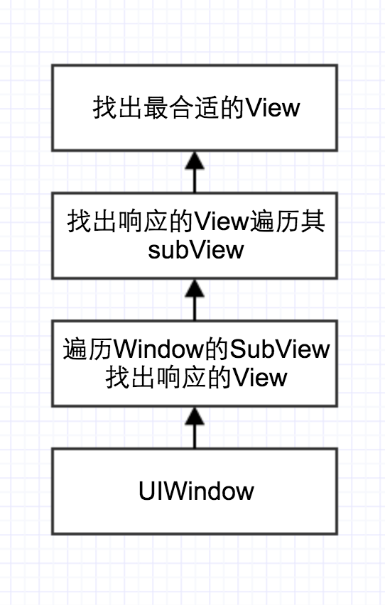

iOS点击屏幕的响应链
响应链，顾名思义，就是有一系列响应对象的集合成的一个层次结构。那什么又是响应对象呢？Cocoa里面规定：凡是继承于UIResponder或者UIResponder的子类的对象都可以作为响应对象，比如UIApplication、UIViewController和UIView。
在响应用户触摸等事件中，APP具体会通过下面三步来完成操作：
- 生成事件。当用户点击屏幕时，会产生一个触摸事件，并放入由Application管理的事件队列中，然后在队列中取出最前面的事件交给Window处理。
- 查找第一响应对象。Window收到事件后会在视图层次结构中找到最适合的一个视图来处理事件，通常一个窗口中最适合处理当前事件的对象称为第一响应对象。
- 处理事件。通常最后是第一响应对象处理事件，如果第一响应对象无法处理事件，就会把事件传递给下一个响应对象，直到Application。如果Application也无法处理，那就丢弃掉此事件。
UITouch
一次触摸将产生一个UITouch：一个手指离开屏幕前的一系列动作，包含时间戳、所在视图、 力度等信息。
当用户用一根触摸屏幕时，会创建一个与手指相关联的UITouch对象
• 一根手指对应一个UITouch对象
• UITouch的作用 保存着跟手指相关的信息，比如触摸的位置、时间、阶段
• 当手指移动时，系统会更新同一个UITouch对象，使之能够一直保存该手指在的触摸位置
• 当手指离开屏幕时，系统会销毁相应的UITouch对象
UIEvent
多个UITouch组成，也就是多个触摸组成。 一个event指的是第一个手指开始触摸到最后一个手指离开屏幕这段时间所有UITouch的总和。
UIEvent：称为事件对象，记录事件产生的时刻和类型
@property(nonatomic, readonly, nullable) NSSet <UITouch *> *allTouches;记录一个事件中的所有手势动作的属性
触摸屏幕的过程
主线程的runloop接收到UIEvent，然后经由分发器，首先分发到window上，然后传递给UIView，然后正式遍历这个UIView的所有子视图的过程。在遍历过程中，如果子视图的任何一个view在执行hittest时返回了self（当前子view），就表示找到了响应的视图，这时父类也会通过返回值将这个子view向上返回，一直返回到window，返回到application，也就让系统知道了应该让谁来处理这个触摸。
注意：以下三种情况下，view将不会执行hittest：
1. hidden=YES
2. userInteractionEnabled=NO
3. alpha<0.01
PS:1. 即使某个view不会作为响应者，并且也不在点击范围内，只要它是当前显示的vc或者view的子视图，就会被httest遍历到，从而获取到是否可以作为响应者的信息。
根据nextResponder可找出当前点击的控制器
view的nextResponder可能是view，如果是view就继续找nextResponder，直到是vc了，就是它所属的vc。
vc上面还有childVC，这时childVC的nextResponder不是UIWindow，而是其父类vc，一直到vc已经是UIWindow的rootVC，其nextResponder才是UIWindow。
如果要处理某个view的点击事件，重写该方法
-(UIView *)hitTest:(CGPoint)point withEvent:(UIEvent *)event{
NSLog(@"C view");
UIView *hitTestView = [super hitTest:point withEvent:event];
if (hitTestView == self) {
NSLog(@"LMViewC->%@",hitTestView);
return hitTestView;
}
return nil;
}
如果hitTest:withEvent:方法中返回nil，那么调用该方法的控件本身和其子控件都不是最合适的view，也就是在自己身上没有找到更合适的view。那么最合适的view就是该控件的父控件。
pointInside:withEvent:方法判断点在不在当前view上（方法调用者的坐标系上）如果返回YES，代表点在方法调用者的坐标系上;返回NO代表点不在方法调用者的坐标系上，那么方法调用者也就不能处理事件。
hitTest:withEvent:是传递事件,父控件到子控件。
-(void)touchesBegan:(NSSet<UITouch *> *)touches withEvent:(UIEvent *)event{
NSLog(@"%s",__func__);
NSLog(@"------------------");
NSLog(@" v ");
NSLog(@" %@", [self class]);
UIResponder * next = [self nextResponder];
while (next != nil)
{
NSLog(@" v ");
NSLog(@" %@", [next class]);
next = [next nextResponder];
}
NSLog(@"------------------");
[super touchesBegan:touches withEvent:event];
}
touchesBegan:是响应事件,是从子控件到父控件。
先传递后响应！
事件传递过程

事件响应过程
 

如果当前 view 是控制器的 view，那么控制器就是上一个响应者，事件就传递给控制器；如果当前 view 不是控制器的 view，那么父视图就是当前 view 的上一个响应者，事件就传递给它的父视图。
注意：自己的hitTest:withEvent:方法中返回自己有时候会出现问题，因为会存在这么一种情况，当遍历子控件时，如果触摸点不在子控件A自己身上而是在子控件B身上，还要要求返回子控件A作为最合适的view，采用返回自己的方法可能会导致还没有来得及遍历A自己，就有可能已经遍历了点真正所在的view，也就是B。这就导致了返回的不是自己而是点真正所在的view。所以还是建议在父控件的hitTest:withEvent:中返回子控件作为最合适的view！